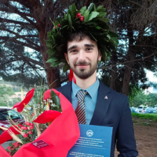
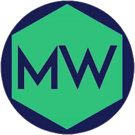
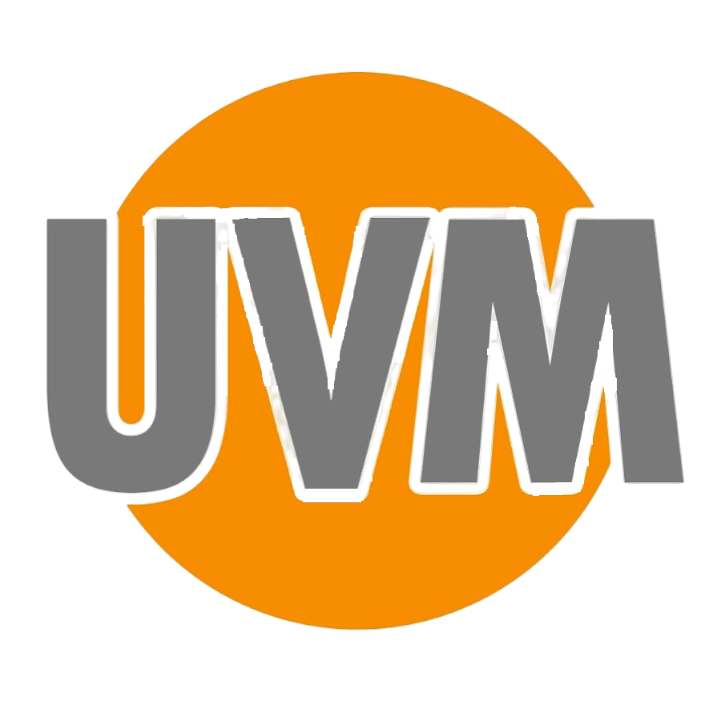

PROFILO PROFESSIONALE
Content Manager e Digital Journalist con Laurea Magistrale in Giornalismo e specializzazione in SEO Copywriting e IA applicata all'editoria. Esperienza consolidata nella gestione di flussi redazionali, coordinamento di team di scrittura e ottimizzazione di contenuti per CMS WordPress sotto picchi di traffico. Specializzato nel coniugare il rigore del fact-checking e della rassegna stampa con strategie digitali orientate all'engagement e al posizionamento organico sui motori di ricerca.
Scarica il mio CV (PDF)COMPETENZE E TOOLKIT
Editoriale & SEO
- SEO Copywriting & Strategy
- Editing & Proofreading
- Gestione Piani Editoriali
- Fact-checking & News-gathering
Tech & Data
- WordPress (Livello Avanzato)
- SQL (Querying Databases)
- HTML5 & CSS3 (Sviluppo Base)
- Data Entry & Cleaning
Strumenti & Media
- Google Workspace
- Visual Studio Code
- Canva (Grafica Web)
- Social Media Management
FORMAZIONE ACCADEMICA
Laurea Magistrale in Metodi e Linguaggi del Giornalismo
Università degli studi di Messina | 2022 - 2024
Tesi: "L'evoluzione della comunicazione delle società di calcio tra vecchi e nuovi media: i casi di Juventus FC e Real Madrid CF"


CERTIFICAZIONI & LABORATORI
Tech & Data Innovation
AI & Algoritmi Bootcamp
Ifthenelse srls | Gennaio 2026
Lezioni divise in due giorni incentrate sulla nascita e la conoscenza di un algoritmo.
Vedi AttestatoQuerying Databases
Ifthenelse srls | Dicembre 2025
Corso focalizzato sull'apprendimento del linguaggio SQL per l'interrogazione di database.
Vedi AttestatoCoding Night
Boolean srls | Aprile 2025
Corso articolato in tre diverse serate incentrate sulla conoscenza base di HTML, CSS e JavaScript.
Vedi AttestatoData Week #AI_Challenge
Develhope | Aprile 2025
Corso intensivo di una settimana incentrato sulle basi teoriche applicate all'Intelligenza artificiale, creazione di un chatbot da zero e l'utilizzo di Phyton per le AI.
Vedi AttestatoMedia & Journalism
Giornalismo Digitale, SEO di base e AI applicata
Link Comunication | Aprile 2026
Percorso formativo orientato alla scrittura giornalistica online, all’ottimizzazione dei contenuti per i motori di ricerca e all’utilizzo dell’intelligenza artificiale come supporto operativo.
Vedi AttestatoMedia Monitoring e Rassegna Stampa
L'Eco della Stampa | Gennaio 2026
Il Corso approfondisce tutti gli aspetti di un sistema di media monitoring, dalla profilazione dei contenuti alla segmentazione in Rubriche, fino all’uso quotidiano di piattaforme di Rassegna con funzionalità evolute.
Vedi AttestatoUniMe GDS Lab
Gazzetta del Sud & Società Editrice Sud | Maggio 2023
Laboratorio articolato in moduli teorici e pratici incentrati sulla lettura del giornale (in formato cartaceo o digitale) e sulla produzione di articoli, al fine di implementare le competenze relative all'attività giornalistica.
Vedi AttestatoESPERIENZE PROFESSIONALI
-
Content Writer – Storyteller d’Impresa – Trovaweb (Febbraio 2026 - In corso)
Ideazione e sviluppo di progetti di storytelling d'impresa per la promozione di Piccole e Medie Imprese (PMI) locali; Conduzione di interviste dirette a imprenditori locali, gestione delle attività di ricerca e stesura di articoli pubbliredazionali mirati alla valorizzazione del brand e della comunicazione territoriale.
Storytelling Content Strategy Brand Storytelling
-
Redattore Sportivo & Content Specialist – StileJuventus (aprile 2026 - In corso)
Redazione di articoli settimanali ottimizzati SEO focalizzati sull'attualità e l'analisi legata alla Juventus FC, incrementando la copertura editoriale della piattaforma; Esecuzione del monitoraggio quotidiano dei media (Media Monitoring) e rassegna stampa strategica per intercettare trend e breaking news in tempo reale, convertendoli in contenuti web ad alto engagement.
Media Monitoring Fact-Checking WordpressVedi i miei articoli su StileJuventus.com
-
Digital Journalist & Live Blogger – Rosanero TV (settembre 2025 - Dicembre 2025)
Gestione in tempo reale del live blogging per i match del Palermo FC tramite CMS proprietario, garantendo la tempestività e l'accuratezza delle informazioni durante le dirette; Responsabile del proofreading, del controllo qualità dei testi e del factchecking rigoroso delle fonti giornalistiche prima della messa online.
Live Blogging Content Strategy Quality AssuranceVedi i miei articoli su Rosanero TV -
Redattore Tecnico (Contabilità) – Mind & Work (Marzo 2025 - Settembre 2025)
Redazione di approfondimenti economico-contabili con focus sulla precisione del dato.
Technical Writing Data AccuracyVedi i miei articoli su Mind & Work
-
Caporedattore (Sez. Vita Universitaria) – UniVersoMe (settembre 2023 - Ottobre 2024)
Coordinamento editoriale della sezione e gestione diretta di un team di redattori junior, supervisionando il piano editoriale e l'assegnazione dei pezzi; Gestione del flusso di pubblicazione su WordPress: formattazione avanzata, content curation e ottimizzazione SEO on-page di articoli di attualità e reportage accademici.
SEO Management WordPress Team LeadershipVedi i miei articoli su UniVersoMe
-
Articolista di Cronaca e Geopolitica – ArcheoMe (Aprile 2022 - Ottobre 2022)
Crisis Reporting sul conflitto Russo-Ucraino basato sull'analisi di fonti verificate.
Crisis Reporting Fact-checkingVedi i miei articoli su ArcheoMe